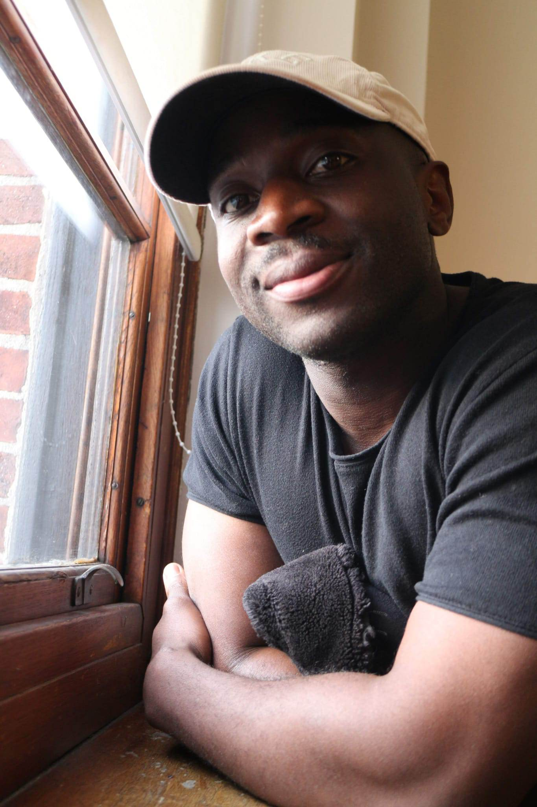

Ian Lutaaya

Summary
An adaptable and highly reliable team member with strong analytical and communications skills. Passionate about Technology and fitness with nearly a decade’s experience working in a fast-paced high-pressure environment
Education
Higher National Certificate level 4
Building Studies
University of Brighton
2013-2015
Alevels
Maths, Physics, ICT, English Literature
Lewes Sixth Form College
2010-2012
In Progress
The Complete 2023 Web Development Bootcap
Work experience
BRITISH ARMY Non-Commissioned Officer 2016 -Present
Main roles
Tank Crewman
- Earned a reputation of being reliable to complete delegated tasks in a timely manner
- Frequently worked closely with team members to find solutions to complex tasks under tight deadlines.
- Developed diagnostic skills through fixing mechanical issues on the combat vehicles and weapon systems.
Reconnaissance soldier
- Gathering and analyzing of information on various missions enabled the development of critical and analytic thinking.
- Developed an understanding for the need for Safe handling and passage of information through routinely conducting covert missions
Advanced signaller
- Worked as a communications systems subject matter expert which enhanced skills such as vulnerability testing, detecting and remedy of faults and best practice to avoid attacks from hostile parties
Team medic
- Provided emergency medical care for team members while Keeping composure under highly stressful environments
Physical Training Instructor
- Managed the fitness and well-being of 400 plus work colleagues in junior and senior roles
- Developed strong coaching and mentoring skills
Section Commander
- Mentored more junior team members
- Routinely prioritized and delegated of tasks in order to efficiently operate as a team
- Was responsible maintaining discipline and professionalism of a team of 8
- Was instrumental in setting standard operating procedures
- Routinely responsible for maintenance and operation of £2m+ equipment
Skills
Autodesk
AutoCAD
REVIT
Adobe InDesign
HTML/CSS
Microsoft office suite
Awards
International 4-day Nijmegen marches 2017
Exercise Cambrian Patrol 2018
100km Estonia Marches 2020
Others
Contact me